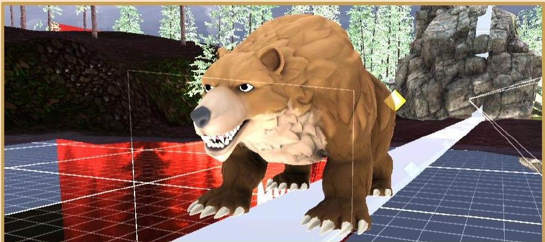
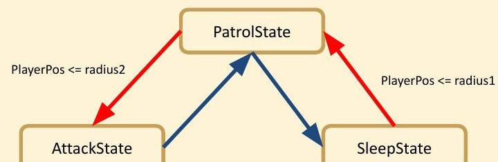

Jeu 2.5D · Unity
Hubris Platformer 2.5D sous Unity, développé à cinq
- Période
- janv. – mai 2025
- Équipe
- avec Matthias Bienvenu, Owan Mannone, Gabriel Donio et Aymeric Portal
- Outils
- Unity, C#
Platformer 2.5D construit avec les outils 3D d'Unity, présenté à l'oral dans le cadre du projet de développement informatique. Le joueur dispose d'une physique de déplacement écrite sur mesure (saut, double saut, saut maintenu) et affronte des ennemis puis un boss à travers plusieurs zones. Le reste de l'équipe a pris en charge l'environnement, les shaders et les effets visuels, ma part étant le gameplay et l'IA des ennemis.
Ma contribution
- IA des ennemis par machine à états finis :
SleepState,PatrolState(waypoints) etAttackState(approche, attaque lourde avec répulsion), avec transitions déclenchées par la détection du joueur - Modélisation mathématique d'une attaque du boss : trajectoires paraboliques calculées en temps réel
- Itérations sur le game feel et la difficulté
Ce que j'en retiens
- Accepter les impasses : une centaine d'heures de l'équipe perdues sur des modèles et animations non retenus
- Savoir passer la main et sacrifier ses envies au profit du collectif
- Les difficultés de Git en équipe de cinq : des commits peu organisés, que je soigne davantage depuis

